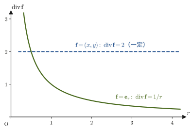
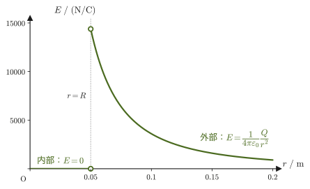

第35章クーロンの法則とガウスの法則
下敷きを毛糸のセーターでこすってから細かく切った紙片に近づけると，紙片がふわりと下敷きに吸いつく．雷は雲と地面のあいだを走る巨大な放電である．方位磁針のN極は，離れたところにある地球の磁気の向きに，なぜか揃う——電気と磁気にまつわるこうした現象は，力学や熱力学で扱ってきた「触れて押す・引く」力とはどこか違う，不思議な感触をともなう．しかし，これらはすべて，たった1組の法則（マクスウェル方程式）にまとめ上げられる，きわめて整った物理現象である．第I部から第IV部までで，質点・剛体・波・熱という「目に見え，手で触れられる」対象を扱ってきた本書は，この第V部からしばらく，電荷という新しい主人公とともに電磁気学（electromagnetism）の世界に入る．
電磁気学の出発点は，高校物理でも学んだクーロンの法則（Coulomb's law）——2つの点電荷のあいだにはたらく力が，電荷の積に比例し距離の2乗に反比例するという法則——である．この式の形は，同じく高校で学んだニュートンの万有引力の法則と驚くほどよく似ている．しかし，似ているからこそ見えてくる違いもある．本章ではまず，この2つの「逆2乗則」を並べて比較するところから始め（35.1節），クーロン力を「離れた場所に瞬時にはたらく力（遠隔力）」ではなく「空間そのものに宿る性質（電場）を介して伝わる力（近接力）」として捉え直すファラデー（Faraday）の発想を追い，あわせて電場と磁場とは何かを整理する（35.2節）．そのうえで，クーロンの法則から出発し，球面・一般の閉曲面・発散定理という3段階を経て，マクスウェル方程式（Maxwell's equations）の1番目であるガウスの法則（Gauss's law）$\operatorname{div}\bm D=\rho$ を，一行も飛ばさずに導く（35.3–35.5節）．最後に，平行板電極のあいだに置かれた導体球に起こる静電誘導を例にとり，導いたばかりのガウスの法則を実際に使って，「導体の内部に電場が存在しない理由」「電荷が導体の表面だけに分布する理由」を明らかにする（35.6節）．
- 第35章（本章） クーロンの法則とガウスの法則——クーロン力と万有引力の比較，電場と電気力線，マクスウェル方程式の1つであるガウスの法則の導出，導体球の静電誘導．
- 第36章 電位とコンデンサー——電場から電位（スカラー量）への還元，ガウスの法則を使った電場の計算のまとめ，コンデンサーと静電エネルギー．
- 第37章 定常電流と電気回路——電流・抵抗・オームの法則，キルヒホッフの法則．
- 第38章 磁場の源——ビオ＝サバールの法則とアンペールの法則．
- 第39章 電流と荷電粒子にはたらく磁気力——ローレンツ力とホール効果．
- 第40章 電磁誘導とインダクタンス——ファラデーの電磁誘導の法則，自己誘導・相互誘導．
- 第41章 物質中の電場と磁場——誘電体と磁性体，分極と磁化．
- 第42章 マクスウェル方程式と電磁波——4つの方程式の総まとめと，電磁波の導出．
- クーロンの法則と万有引力の法則を比較し，力の符号（引力のみか，引力と斥力の両方か），力の定数の大きさ，遠隔力と近接力という4つの観点から違いを整理する——電子と陽子のあいだでは，クーロン力が万有引力のおよそ $10^{39}$ 倍という桁違いの大きさになることを実際に計算する
- ファラデーによる電気力線の着想を通じて，クーロン力を「近接力」として捉え直す電場 $\bm E$ の考え方と，電場中の電荷が受ける力 $\bm F=q\bm E$ の関係，電場の重ね合わせ，電気力線の性質と「本数」の約束を理解する．磁場とは何かも一言で整理する
- クーロンの法則から出発し，球対称なガウス面 → 一般の閉曲面 → ガウスの発散定理という3段階を経て，マクスウェル方程式の1つ $\operatorname{div}\bm E=\rho/\varepsilon_0$（ガウスの法則の微分形）を導出する
- 電束密度 $\bm D=\varepsilon_0\bm E$ を定義し，ガウスの法則を積分形 $\iint_S\bm E\cdot\bm n\,\dd S=Q/\varepsilon_0$ と微分形 $\operatorname{div}\bm D=\rho$ の両方の形で使い分けられるようにする
- ガウスの法則の物理的な意味（閉曲面を貫く電気力線の正味の本数が，その内部にある電荷の量を表す）を理解する
- 平行板間に置かれた導体球の静電誘導を例に，静電平衡にある導体の内部で電場が $\bm 0$ になること，電荷が導体の表面にのみ分布し，表面のすぐ外側の電場が $\sigma/\varepsilon_0$ になることを，ガウスの法則から示す
もとにしたノート：望月泰英『物理学ノート 電磁気学』 pp. 1–6．
35.1 クーロン力と万有引力 — 二つの逆2乗則の違い
高校物理で，2つの点電荷 $q,Q\ [\mathrm C]$（単位はクーロン，coulomb）が距離 $r\ [\mathrm m]$ だけ離れて置かれているとき，両者のあいだにはたらく力の大きさが $k|qQ|/r^2$（$k$ は比例定数）と表されることを学んだはずである．これを，力の向きまで含めたベクトルの形で書き直すと，次のようになる．
法則35.1 クーロンの法則
真空中に固定された点電荷 $Q$ から距離 $r$ だけ離れた点に置かれた点電荷 $q$ が受ける力（クーロン力，Coulomb force）は，
\begin{equation} \bm F_C=\frac{1}{4\pi\varepsilon_0}\cdot\frac{qQ}{r^2}\,\bm e_r \label{eq:35-coulomb} \end{equation}である．ここで $\bm e_r$ は，$Q$ から $q$ に向かう向きの単位ベクトル（大きさ1のベクトル．第1章以来使ってきた極座標の動径方向の単位ベクトルと同じ記号を流用する），$\varepsilon_0\ [\mathrm{F/m}]$（イプシロン・ゼロ）は真空の誘電率（vacuum permittivity）と呼ばれる定数である．$q,Q$ は符号（正負）を持つ量なので，積 $qQ$ の符号によって $\bm F_C$ の向きが $\bm e_r$ と同じ向き（$qQ\gt0$，$Q$ から遠ざかる向き＝斥力）にも，逆向き（$qQ\lt0$，$Q$ に近づく向き＝引力）にもなる．力の大きさだけを知りたいときは絶対値をとって $\abs{\bm F_C}=\dfrac{1}{4\pi\varepsilon_0}\dfrac{\abs{qQ}}{r^2}$ と書けばよい．比例定数をまとめて $k\equiv\dfrac{1}{4\pi\varepsilon_0}$ とおくと，高校物理の式 $F=k\abs{qQ}/r^2$ そのものになる．
$\varepsilon_0$ の単位に出てくる $\mathrm F$（ファラド，farad）は電気容量の単位で，$1\ \mathrm F=1\ \mathrm{C/V}$ である（詳しくは第36章）．$\mathrm V=\mathrm J/\mathrm C=\mathrm{N\,m/C}$ を使うと，$\mathrm{F/m}=\dfrac{\mathrm C}{\mathrm{V\,m}}=\dfrac{\mathrm C^2}{\mathrm{N\,m^2}}$ と書き直せる．これは $k=1/(4\pi\varepsilon_0)$ の単位 $\mathrm{N\,m^2/C^2}$ の逆数と（$4\pi$ を除いて）一致している．なお，比例定数を $k$ と書かずにわざわざ $1/(4\pi\varepsilon_0)$ と書くのは，35.3節で半径 $r$ の球の表面積 $4\pi r^2$ を掛けたときに $4\pi$ が消えて，ガウスの法則が $4\pi r^2\abs{\bm E}=Q/\varepsilon_0$ とすっきりした形になるからである．
これと，第8章で学んだ万有引力の法則（Newton's law of universal gravitation，第8章）を並べてみよう．質量 $m,M\ [\mathrm{kg}]$ の2つの質点が距離 $r$ だけ離れているとき，質点 $M$ が質点 $m$ に及ぼす万有引力は，
$$ \bm F_g=-G\cdot\frac{mM}{r^2}\,\bm e_r $$である（$\bm e_r$ はここでも $M$ から $m$ に向かう単位ベクトル，$G$ は万有引力定数）．式\eqref{eq:35-coulomb}と見比べると，「電荷の積 $qQ$」が「質量の積 $mM$」に，「比例定数 $1/4\pi\varepsilon_0$」が「比例定数 $G$」に対応しており，どちらも「距離の2乗に反比例する」という同じ形をした力（逆2乗則，inverse-square law）である．しかし，細部を比べると，少なくとも4つの重要な違いがあることに気づく．
(I) 力の符号——引力のみか，引力と斥力の両方か． 万有引力の式にはあらかじめ負号 $-$ が付いており，質量 $m,M$ はどちらも正の量なので，$\bm F_g$ は常に $-\bm e_r$ の向き，つまり常に引力である．一方，クーロン力の式\eqref{eq:35-coulomb}には負号が付いておらず，電荷 $q,Q$ の符号の組み合わせによって，同符号どうし（$qQ\gt0$）なら斥力，異符号どうし（$qQ\lt0$）なら引力になる（図35.1）．これは，質量には正の値しかないのに対し，電荷には正と負の両方が存在するという，そもそもの量としての性質の違いに由来している．
(II) 力の定数の大きさ． 2つの比例定数の値を比べてみよう．万有引力定数は
$$ G\approx6.674\,30\times10^{-11}\ \mathrm{N\,m^2/kg^2} $$であるのに対し，クーロンの法則の定数は
$$ k=\frac{1}{4\pi\varepsilon_0}\approx8.988\times10^{9}\ \mathrm{N\,m^2/C^2} $$である．2つの定数は単位が違う（$\mathrm{kg}$ と $\mathrm C$）ので，数値だけを比べても意味がない．そこで具体的な状況で比べてみよう．$1\ \mathrm C$ の点電荷を2つ $1\ \mathrm m$ 離して置くとクーロン力は $k\times\dfrac{1\cdot1}{1^2}\approx9.0\times10^{9}\ \mathrm N$，$1\ \mathrm{kg}$ の質点を2つ $1\ \mathrm m$ 離して置くと万有引力は $G\times\dfrac{1\cdot1}{1^2}\approx6.7\times10^{-11}\ \mathrm N$ である．比は $k/G\approx1.35\times10^{20}$ となる．もちろん $1\ \mathrm C$ は日常的にはたいへん大きな電荷であり（静電気で帯電した下敷きの電荷は $10^{-9}$〜$10^{-7}\ \mathrm C$ 程度），$1\ \mathrm{kg}$ とは大きさの感覚が違う．それでも，力の定数だけでこれだけ違うことは覚えておいてよい．（後の例題35.1で，実際の電子・陽子という具体的な粒子で比較すると，質量と電荷の値そのものの違いも加わって，さらに桁が変わることを見る．）
イメージ：電荷が運動すると何が起こるか（(III)）
ニュートン力学の枠内では，質点が静止していようと運動していようと，その質点の存在が及ぼす万有引力の法則そのものは変わらない——質点の運動は，まわりの空間に（重力以外の）何の影響も及ぼさない．ところが，電磁気学では事情が違う．電荷が運動すると，そのまわりに磁場が発生する——これは電流（動いている電荷の集まり）のまわりに磁場ができるという，高校物理でも習った事実そのものである．この現象は第38章（ビオ＝サバールの法則）で本格的に扱う．さらに，磁場が時間変化すると今度は電場が生まれる（第40章，電磁誘導）．電場と磁場がお互いを生み出しながら空間を伝わっていく現象が電磁波（光）であり，これが電磁気学の集大成である（第42章）．万有引力にはこのような「相棒」となる場が（ニュートン力学の範囲では）存在しない——この非対称性も，クーロン力と万有引力の大きな違いの1つである．
(IV) 遠隔力と近接力． 万有引力は，2つの質点のあいだの空間に何もなくても，瞬時にはたらくように見える力——遠隔力（action at a distance）として素朴に理解できる．クーロン力も，式の形だけを見れば同じく遠隔力のように見える．しかし，このとらえ方には物理的な難点がある——「一方の電荷を動かしたら，もう一方の電荷が受ける力は，いつ，どうやって変化を知るのか」という問いに，遠隔力の考え方では答えられないのである．この問いへの答えが，クーロン力を「空間そのものを媒介として伝わる」近接力（force transmitted through a field，場を介して局所的に伝わる作用）として捉え直す，次節の「電場」という考え方である（この問いへの答えは次節で述べる）．ここで「近接」とは，力がそれぞれの場所での場の値だけで決まるという意味であって，力が届く距離が短いという意味ではない（クーロン力は遠くまで届く）．
考察：二体力・中心力・保存力
クーロン力も万有引力も，次の3つの性質を共通に持つ力である．
- 二体力：ちょうど2つの物体（電荷や質点）のあいだだけで決まる力であり，第三の物体の存在によって直接変化することはない．3つ以上の物体があるときは，各物体からの二体力のベクトル和がその物体にはたらく力になる（重ね合わせの原理．電場については35.2節で述べる）．
- 中心力（第8章8.1節）：力の向きが常に2つの物体を結ぶ直線（動径方向 $\bm e_r$）に沿っており，力の大きさが2つの物体間の距離 $r$ だけで決まる力．中心力のもとでは角運動量が保存する（第8章8.1節でケプラーの第2法則として使った性質そのものである）．
- 保存力（第4章4.4節）：力がした仕事が経路によらず，位置エネルギー（ポテンシャルエネルギー）という1つのスカラー量の差だけで決まる力．クーロン力の位置エネルギーは第36章で扱う．
「二体力である」「中心力である」「保存力である」という3つの性質は，実は独立ではなく，互いに深く関わり合っている（例えば，力の大きさが距離 $r$ だけで決まる中心力 $\bm F=f(r)\bm e_r$ は必ず保存力になることが示せる）．この関係については，発展的な話題として力学の教科書（例えば参考文献のGoldstein）にゆずる．
例題35.1 クーロン力と万有引力の桁違いの大きさ——水素原子の中で
水素原子の中で，陽子（電荷 $+e$，質量 $m_{\mathrm p}$）と電子（電荷 $-e$，質量 $m_{\mathrm e}$）が距離 $r$ だけ離れているとする．陽子と電子のあいだにはたらくクーロン力の大きさ $\abs{F_C}$ と万有引力の大きさ $\abs{F_g}$ の比 $\abs{F_C}/\abs{F_g}$ を求めよ．また，その値を電気素量 $e=1.602\,176\,634\times10^{-19}\ \mathrm C$，電子の質量 $m_{\mathrm e}=9.109\,383\,7015\times10^{-31}\ \mathrm{kg}$，陽子の質量 $m_{\mathrm p}=1.672\,621\,923\,69\times10^{-27}\ \mathrm{kg}$ を用いて数値で評価せよ．
解答 式\eqref{eq:35-coulomb}より，クーロン力の大きさは $\abs{F_C}=\dfrac{1}{4\pi\varepsilon_0}\dfrac{e^2}{r^2}$（陽子の電荷は$+e$，電子の電荷は$-e$なので積の絶対値は$e^2$），万有引力の大きさは $\abs{F_g}=G\dfrac{m_{\mathrm e}m_{\mathrm p}}{r^2}$ である．どちらも同じ距離 $r$ の2乗に反比例するので，比をとると $r^2$ がちょうど打ち消し合う：
$$ \frac{\abs{F_C}}{\abs{F_g}}=\frac{\dfrac{1}{4\pi\varepsilon_0}\dfrac{e^2}{r^2}}{G\dfrac{m_{\mathrm e}m_{\mathrm p}}{r^2}}=\frac{e^2}{4\pi\varepsilon_0\,G\,m_{\mathrm e}m_{\mathrm p}} $$（この比が原子核と電子の距離 $r$（原子の大きさ）によらない，という事実そのものが，逆2乗則どうしの比較の面白いところである．）数値を代入する前に，分子と分母を別々に計算して桁を確かめておく．分子は $e^2=(1.602\,177\times10^{-19}\ \mathrm C)^2\approx2.567\times10^{-38}\ \mathrm{C^2}$．分母では，$4\pi\varepsilon_0\approx4\pi\times(8.854\,188\times10^{-12}\ \mathrm{F/m})\approx1.113\times10^{-10}\ \mathrm{F/m}$，$G\,m_{\mathrm e}m_{\mathrm p}=(6.674\,30\times10^{-11})\times(9.109\,384\times10^{-31})\times(1.672\,622\times10^{-27})\approx1.017\times10^{-67}\ \mathrm{N\,m^2}$ である．したがって，
$$ \frac{\abs{F_C}}{\abs{F_g}}=\frac{(1.602\,176\,634\times10^{-19})^2}{4\pi\times(8.854\,187\,8128\times10^{-12})\times(6.674\,30\times10^{-11})\times(9.109\,383\,7015\times10^{-31})\times(1.672\,621\,923\,69\times10^{-27})} $$ $$ =\frac{2.567\times10^{-38}}{(1.113\times10^{-10})\times(1.017\times10^{-67})}\approx2.27\times10^{39} $$となる．比が無次元であることも確認しておこう．分母の単位は $\mathrm{F/m}\times\mathrm{N\,m^2}=\mathrm{F\,N\,m}$ で，$\mathrm F=\mathrm{C^2/J}$，$\mathrm J=\mathrm{N\,m}$ より $\mathrm{F\,N\,m}=\mathrm{C^2}$ となり，分子の $\mathrm{C^2}$ と打ち消し合う．すなわち，水素原子の中では，陽子と電子のあいだのクーロン力は，同じ2つの粒子のあいだの万有引力のおよそ$2\times10^{39}$ 倍（ほぼ10の39乗倍）にもなる．原子や分子の構造，化学結合，物質の硬さや弾性——身のまわりのほとんどの現象が電磁気力によって支配されており，重力の効果が原子・分子のスケールではまったく無視できることが，この途方もない比の数値からも実感できる（逆に言えば，重力が「弱い」からこそ，地球や太陽のように電気的にほぼ中性な巨大な質量の集まりだけが，長距離力として重力を顕在化させるのである）．
35.2 電場という考え方 — 遠隔力から近接力へ
前節(IV)で述べた疑問——「一方の電荷を動かしたら，もう一方の電荷はいつ・どうやってその変化を知るのか」——に対して，ファラデー（Michael Faraday）は，19世紀に次のような大胆な発想を提案した．まず，電荷のまわりの全方向に広がる電気力線（lines of force，正確な定義は後の定義35.2）を考案した．そして，電気力線の集まった場として電場の考え方を導入し，クーロン力を遠隔力ではなく近接力として扱うことを提案した．電荷 $Q$ は，それ単独で，そのまわりの空間の性質を変えている．具体的には，$Q$ のまわりの空間の各点に，「そこに単位の電荷を置いたらどんな力を受けるか」という情報（大きさと向きを持つベクトル）を対応させる．この，空間の各点にベクトルの値を対応させたものを電場（electric field）と呼ぶ．そして，別の電荷 $q$ が力を受けるのは，$Q$ から直接遠く離れて力を及ぼされるのではなく，$q$ が「自分のいる場所の電場」に触れることによってである——これなら，力は空間のすぐそばの性質（電場の値）だけで決まる近接力として理解できる．大学数学（AD 02）で学んだ「スカラー場・ベクトル場」（大学数学 第18章 18.1節）という言葉を使えば，電場とは空間の各点にベクトルを対応させるベクトル場（vector field）の一種である．
前節(IV)の問いへの答えは，次のとおりである．電荷を動かすと，そのまわりの電場の変化が，真空中では光速 $c$ という有限の速さで，波として空間を伝わっていく．離れた場所にある電荷は，自分のいる場所に届いた電場から力を受けるので，変化を知るのは，電場の変化が届いたあとである．この電場と磁場の波が電磁波（光）であり，第42章で扱う．なお，万有引力についても，質量あたりの力 $\bm g=\bm F/m$ として重力場を数学的には同様に定義できる．しかし，ニュートン力学の重力には，電気力線に当たる「力線」の描像が電磁気学ほどには用いられず，場が独立したものとして空間を伝わるという考え方も現れない．場が電荷や電流とは別に，それ自体の性質として空間を伝わることが，電磁気学の大きな特徴である．
定義35.1 電場
空間のある点に，電荷 $q$ を静かに置いたときにその電荷が受ける力を $\bm F$ とすると，その点における電場 $\bm E\ [\mathrm{N/C}]$ を，
\begin{equation} \bm F=q\bm E \qquad\text{すなわち}\qquad \bm E=\frac{\bm F}{q} \label{eq:35-field-force} \end{equation}で定義する．ただし，置く電荷 $q$（試験電荷，test charge）は，もとの電荷分布を乱さないほど十分に小さいとする．電場 $\bm E$ は「そこに置かれた電荷 $q$ の大きさ・符号によらず，その場所そのものが持っている性質」であり，実際に置く試験電荷 $q$ を変えても $\bm E$ 自体は変わらない（$q$ を2倍にすれば，受ける力 $\bm F$ も2倍になるが，比 $\bm F/q$ は変わらない）．式\eqref{eq:35-field-force}に $q$ の符号を具体的に代入すると，正の電荷は電場と同じ向きの力を受け（$\bm F=q\bm E$，$q\gt0$），負の電荷は電場と逆向きの力を受ける（$q=-\abs q$ なら $\bm F=-\abs q\,\bm E$）ことが分かる．
点電荷 $Q$ が原点にあるとき，そこから距離 $r$ の点における電場は，クーロンの法則（式\eqref{eq:35-coulomb}）に定義35.1を組み合わせれば直接求まる．距離 $r$ の点に試験電荷 $q$ を置いたとすると，$q$ が受ける力は式\eqref{eq:35-coulomb}より $\bm F=\dfrac{1}{4\pi\varepsilon_0}\dfrac{qQ}{r^2}\bm e_r$ であるから，定義35.1の $\bm E=\bm F/q$ に代入すると，
\begin{equation} \bm E=\frac{1}{4\pi\varepsilon_0}\cdot\frac{Q}{r^2}\,\bm e_r \label{eq:35-point-field} \end{equation}となる（$q$ が両辺から消えることを確認してほしい——これが，$\bm E$ が試験電荷によらない「場所の性質」であることの具体的な表れである）．この電場の中に，別の電荷 $-q$（$q\gt0$）を置くと，式\eqref{eq:35-field-force}より，$-q$ が受ける力は，
$$ \bm F=-q\bm E=-\frac{1}{4\pi\varepsilon_0}\cdot\frac{qQ}{r^2}\,\bm e_r $$となり，$\bm e_r$（$Q$ から遠ざかる向き）と逆向き，つまり $Q$ に引き寄せられる向きになる（図35.2）——これは，$Q$ が正の電荷なら異符号の $-q$ とは引き合うはずだ，という前節(I)の結論とも当然一致している．
点電荷が複数あるときはどうなるだろうか．前節の考察で触れたとおり，3つ以上の電荷があるとき各電荷にはたらく力は二体力のベクトル和になる．これを電場で書けば，次の法則になる．
法則35.2 電場の重ね合わせの原理
複数の点電荷 $Q_1,Q_2,\dots,Q_N$ があるとき，空間の点 $\mathrm P$ における電場は，各電荷が単独でつくる電場（式\eqref{eq:35-point-field}）のベクトル和である：
\begin{equation} \bm E=\sum_{i=1}^{N}\bm E_i=\sum_{i=1}^{N}\frac{1}{4\pi\varepsilon_0}\cdot\frac{Q_i}{r_i^2}\,\bm e_{r_i} \label{eq:35-superposition} \end{equation}ここで，$r_i$ は $Q_i$ から $\mathrm P$ までの距離，$\bm e_{r_i}$ は $Q_i$ から $\mathrm P$ に向かう単位ベクトルである．電荷が連続的に分布しているときは，体積 $\dd V$ の小さな部分の電荷 $\rho\,\dd V$（$\rho$（ロー）は電荷密度，単位は $\mathrm{C/m^3}$）を1つの点電荷とみなして足し合わせる（積分する）．
また，電荷が静止していて，電場が時間によらないとき，この電場を静電場（electrostatic field）と呼ぶ．本章で扱うのは，静電場である．
定義35.2 電気力線
電場 $\bm E$ の中に置いた小さな正の試験電荷が，そのつど受ける力（電場）の向きに少しずつ動かされてゆくとき，その軌跡として描かれる1本の曲線（または直線）を，正電荷が実際に動く向きを示す矢印とともに図示したものを，電気力線（electric field line, line of force）と呼ぶ．電気力線は，各点における電場の向き（曲線の接線方向）を視覚的に表す．電気力線の間隔（密集の度合い）と電場の強さとの関係は，35.3節で調べる．
点電荷1個の電気力線は，図35.2のような放射状の直線である．電荷が複数あると，重ね合わせの原理（法則35.2）により各点の電場が決まり，それにしたがって電気力線が曲がる．いくつかの代表的な電荷配置での電気力線の様子を図35.3に示す．
図35.3から読み取れるように，電気力線には次の性質がある．
- 電気力線は，正の電荷から出て，負の電荷に入る（負の電荷がなければ，無限遠へ伸びていく）．
- 電気力線は，電荷のない場所では途切れたり，新しく生まれたりしない．
- 電気力線は，途中で枝分かれしたり，交差したりしない（交点があると，そこでの電場の向きが2通りになってしまうため）．ただし，電場が $\bm 0$ になる点では，力線はそこで向きを決められない（図35.3(b) の×印）．
- 電気力線の接線の向きが，その点での電場の向きである．
例題35.2 点電荷のつくる電場と，そこに置かれた電荷が受ける力
点電荷 $Q=2.0\ \mathrm{\mu C}=2.0\times10^{-6}\ \mathrm C$ から $r=0.30\ \mathrm m$ 離れた点における電場の大きさ $\abs{\bm E}$ を求めよ．また，その点に電荷 $q=-1.0\ \mathrm{\mu C}$ を置いたとき，$q$ が受ける力の大きさと向きを求めよ．
解答 式\eqref{eq:35-point-field}より，電場の大きさは，
$$ \abs{\bm E}=\frac{1}{4\pi\varepsilon_0}\cdot\frac{Q}{r^2}=\left(8.988\times10^{9}\ \mathrm{N\,m^2/C^2}\right)\times\frac{2.0\times10^{-6}\ \mathrm C}{(0.30\ \mathrm m)^2}\approx2.0\times10^{5}\ \mathrm{N/C} $$（向きは $Q$ から遠ざかる向き，$\bm e_r$ の向き．$Q\gt0$ なので電場は $Q$ から外向きに放射状に広がっている）．この点に置いた電荷 $q=-1.0\ \mathrm{\mu C}=-1.0\times10^{-6}\ \mathrm C$ が受ける力は，定義35.1の式\eqref{eq:35-field-force}より，
$$ \abs{\bm F}=\abs{q}\abs{\bm E}=(1.0\times10^{-6}\ \mathrm C)\times(2.0\times10^{5}\ \mathrm{N/C})\approx2.0\times10^{-1}\ \mathrm N=0.20\ \mathrm N $$であり，$q\lt0$ なので向きは電場 $\bm E$（$Q$ から遠ざかる向き）とは逆，すなわち $Q$ に向かって引き寄せられる向きである（$Q$ と $q$ は異符号なので引力，前節(I)の結論と整合する）．
なぜ？：磁場とは何か
電場と並んで，電磁気学にはもう1つの場がある．磁石や，電流の流れる導線のまわりの空間の各点にも，ベクトルを対応させることができる．これが磁場（magnetic field）である．本書では，磁場を表す量として，磁束密度 $\bm B$（単位はテスラ，$\mathrm T=\mathrm{N/(A\,m)}$）と磁場 $\bm H$（単位は $\mathrm{A/m}$）の2つを使い分ける（真空中では $\bm B=\mu_0\bm H$．2つの違いは第41章で説明する）．電場との違いと関係を，4点でまとめておこう．
- 磁場をつくるもの：磁石，電流，そして動いている電荷が，まわりに磁場をつくる（第38章）．静止した電荷は磁場をつくらない（電場だけをつくる）．
- 磁場から受ける力：磁場 $\bm B$ の中を速度 $\bm v$ で動く電荷 $q$ は，力 $\bm F=q\bm v\times\bm B$ を受ける（第39章）．電場が静止している電荷にも動いている電荷にも力を及ぼすのに対して，磁場は動いている電荷にだけ力を及ぼす（$\bm v=\bm 0$ なら力は $0$）．
- 電場と磁場は独立ではない：磁場が時間変化すると電場が生まれ（電磁誘導，第40章），電場が時間変化すると磁場が生まれる（第42章）．この2つがお互いを生み出しながら空間を伝わっていくものが，電磁波である．
- 方位磁針：地球のまわりにも磁場があり，方位磁針の針（小さな磁石）は，その向きに揃う．
本章では静電場，すなわち電荷が静止しているときの電場だけを扱う．磁場が本格的に現れるのは第38章以降である．
35.3 マクスウェル方程式No.1の導出 — クーロンの法則から発散定理へ
ここからは，前節までに得たクーロンの法則・電場の定義・重ね合わせの原理だけを出発点にして，電磁気学の基礎方程式（マクスウェル方程式）の1つを，一歩ずつ導いていく．考えるのは，電荷が静止していて，場が時間によらない静電場の場合である．目標は，点電荷 $Q$ が原点にあるという特別な状況で成り立つ式\eqref{eq:35-point-field}を，どんな形の電荷分布に対しても成り立つ，もっと一般的で強力な法則へと組み替えることである．
思い出そう：$k$ と $\varepsilon_0$ の値
35.1節で導入した比例定数は，$k=\dfrac{1}{4\pi\varepsilon_0}\approx8.988\times10^{9}\ \mathrm{N\,m^2/C^2}$，$\varepsilon_0=\dfrac1{4\pi k}\approx8.854\times10^{-12}\ \mathrm{F/m}$（$\mathrm F$ はファラド，$\mathrm{C/V}$）であった．なお，歴史的には $k=c^2\times10^{-7}$（$c$ は真空中の光速）という簡単な関係が使われることがある．これは，2019年のSI（国際単位系）改定より前は真空の透磁率が $\mu_0=4\pi\times10^{-7}\ \mathrm{N/A^2}$ と定義されており，$k=1/(4\pi\varepsilon_0)=c^2\mu_0/(4\pi)=c^2\times10^{-7}$ という関係が定義そのものから厳密に成り立っていたためである．2019年の改定後は $\mu_0$ が実験的に決める量（定義値ではない）に変わったため，$k=c^2\times10^{-7}$ は現在では非常によい近似（相対誤差は$10^{-9}$程度）にすぎないが，桁の見積もりには十分実用的である．
点電荷 $Q$（以下 $Q\gt0$ とする．$Q\lt0$ のときは電場の向きが内向きになるだけで，$\bm E\cdot\bm n$ を動径方向の成分と読めば，以下の式はそのまま成り立つ）を中心とする，半径 $r$ の球面を考える（図35.4）．球面上のどの点でも，$Q$ からの距離は等しく $r$ であり，対称性から，電場の大きさ $\abs{\bm E}$ は球面上のどこでも同じ値をとり，向きは球面に垂直（動径方向 $\bm e_r$）である——球のまわりの空間には特別な向きが存在しない（どちら向きも同等である）以上，電場だけが特定の接線方向を選んで曲がる理由がないからである．式\eqref{eq:35-point-field}の大きさをとると，
$$ \abs{\bm E}=\frac{1}{4\pi\varepsilon_0}\cdot\frac{Q}{r^2}=\frac{1}{4\pi r^2}\cdot\frac{Q}{\varepsilon_0} $$であり，両辺に $4\pi r^2$（半径 $r$ の球の表面積）を掛けると，
\begin{equation} 4\pi r^2\abs{\bm E}=\frac{Q}{\varepsilon_0} \label{eq:35-flux-sphere} \end{equation}という式が得られる．この式\eqref{eq:35-flux-sphere}は，ただ式\eqref{eq:35-point-field}を書き換えただけの，見かけは平凡な式である．しかし，次のように解釈すると，驚くほど豊かな内容を持つことが分かる．水の流れにたとえてみよう——空間のある点から水が湧き出している状況を考え，$Q/\varepsilon_0$ を「単位時間あたりに湧き出す水の量」，$\abs{\bm E}$ を「球の表面をその都度通過していく，単位面積あたりの水の流出速度」だとみなす．すると式\eqref{eq:35-flux-sphere}は，「（表面積）×（単位面積あたりの流出速度）＝（湧き出し量）」という，水量の保存則そのものの形をしている．球の表面積を $S=4\pi r^2$ とおけば，
\begin{equation} S\abs{\bm E}=\frac{Q}{\varepsilon_0} \label{eq:35-flux-S} \end{equation}と書ける．
イメージ：電気力線の「本数」の約束と，電場の強さ
電気力線を，単なる絵ではなく「数えられる量」にするために，次の約束をおこう．電場に垂直な面 $1\ \mathrm{m^2}$ あたり，電場の強さ $\abs{\bm E}$ に等しい本数の電気力線を引く（$\abs{\bm E}$ の単位 $\mathrm{N/C}$ を「本/$\mathrm{m^2}$」と読む）．この約束にしたがうと，式\eqref{eq:35-flux-sphere}の左辺 $4\pi r^2\abs{\bm E}$ は，半径 $r$ の球面（面積 $4\pi r^2$）を貫く電気力線の本数であり，右辺は $Q/\varepsilon_0$ 本である．つまり，「電荷 $Q$ からは，$r$ によらず，全部で $Q/\varepsilon_0$ 本の電気力線が出ている」と読める．球面の半径が2倍になると，同じ本数が4倍の面積に広がるので，力線の混み具合（つまり $\abs{\bm E}$）は $1/4$ になる——クーロン電場が $1/r^2$ で弱まることが，電気力線の間隔が広がっていく様子として目に見える．これが，定義35.2で予告した「電気力線の間隔と電場の強さの関係」である．
式\eqref{eq:35-flux-sphere}を水の湧き出しにたとえて解釈した．次に，この解釈をさらに洗練させる．式\eqref{eq:35-flux-S}は，球面のように「電場がどこでも面に垂直で，大きさが一定」という特別な形の面でしか，そのままの形では使えない．一般の（球とは限らない）閉曲面（内部にひとつながりの体積を囲む，袋のような曲面）を考え，面上の各点での外向きの単位法線ベクトルを $\bm n$ とすると，電場 $\bm E$ のうち面に垂直な成分は，内積（大学数学 第15章 15.2節）を使って $\bm E\cdot\bm n$（$\bm E$ の大きさに，$\bm E$ と $\bm n$ のなす角の余弦を掛けたもの）と書ける．
この量を面全体で足し合わせたものが面積分（surface integral）である．曲面 $S$ を小さな面素（面の小片）$\Delta S$ に分け，各面素で $\bm E\cdot\bm n\,\Delta S$（その面素を外向きに貫く電場の量）を求めて足し合わせ，$\Delta S\to0$ の極限をとったものを $\displaystyle\iint_S\bm E\cdot\bm n\,\dd S$ と書く（$\iint$ は積分記号 $\int$ を2つ重ねたもので，面にわたる積分を表す．大学数学 第20章 20.4節）．この量に名前をつけておこう．
定義35.3 電場の流束
曲面 $S$ を貫く電場の流束（フラックス，flux）$\Phi$ を，
$$ \Phi=\iint_S\bm E\cdot\bm n\,\dd S\qquad[\mathrm{N\,m^2/C}] $$で定義する．$\bm n$ は $S$ 上の各点での単位法線ベクトルで，閉曲面のときは外向きにとる．$\Phi\gt0$ は正味で外向きに，$\Phi\lt0$ は正味で内向きに電場が貫いていることを表す．上の約束にしたがえば，$\Phi$ は面を外向きに貫く電気力線の正味の本数である．
球面の場合，面上のどこでも $\bm E\cdot\bm n=\abs{\bm E}$（一定）である（電場が面に垂直で，$\bm n$ と同じ向きなので）から，$\displaystyle\iint_S\bm E\cdot\bm n\,\dd S=\abs{\bm E}\iint_S\dd S=\abs{\bm E}\cdot4\pi r^2=S\abs{\bm E}$ となり，式\eqref{eq:35-flux-S}の左辺と一致する．そこで，式\eqref{eq:35-flux-S}の左辺を面積分に置き換えた，次の式が一般の閉曲面についても成り立つと予想する（次のイメージと導出で，実際に成り立つことを確かめる）．
\begin{equation} \iint_S\bm E\cdot\bm n\,\dd S=\frac{Q}{\varepsilon_0} \label{eq:35-gauss-integral} \end{equation}なお，ガウスの法則を実際に使うときに選ぶ，仮想的な閉曲面のことをガウス面（Gaussian surface）と呼ぶ．ガウス面は実在する面である必要はなく，計算がやさしくなるように自由に選んでよい（例題35.3）．
イメージ：なぜ球以外の閉曲面でも同じ式が成り立つのか
点電荷 $Q$ から出る電気力線は，途中の空間（電荷が存在しない領域）で新たに生まれたり消えたりしない——電気力線は $Q$ からしか生まれない．したがって，$Q$ を内部に含む閉曲面であれば，それがどんな形をしていても，$Q$ から出た電気力線は必ずどこかでその閉曲面を1回だけ外向きに貫いて通り抜ける（曲面が複雑にくねっていて同じ電気力線と複数回交差するように見える場合も，出入りが対になって正味の通過回数は変わらない）．つまり，閉曲面を正味で貫く電気力線の本数は，曲面の形によらず，中に含まれる電荷 $Q$ だけで決まる．これが，式\eqref{eq:35-gauss-integral}が球面だけでなく任意の閉曲面について成り立つことの直感的な理由である．
導出：任意の閉曲面で $\iint_S\bm E\cdot\bm n\,\dd S=Q/\varepsilon_0$ となること（立体角による証明）
点電荷 $Q$ の位置を原点にとり，$Q$ を内部に含む任意の閉曲面 $S$ を考える．$S$ 上の面素 $\dd S$ が $Q$ から距離 $r$ の位置にあり，その外向き法線 $\bm n$ と，$Q$ から面素へ向かう単位ベクトル $\bm e_r$（電場の向き）のなす角が $\theta$ であるとする（図35.6）．式\eqref{eq:35-point-field}より，この面素を貫く電場の量は，$\bm e_r\cdot\bm n=\cos\theta$ を使って，
$$ \bm E\cdot\bm n\,\dd S=\frac{1}{4\pi\varepsilon_0}\cdot\frac{Q}{r^2}\,(\bm e_r\cdot\bm n)\,\dd S=\frac{Q}{4\pi\varepsilon_0}\cdot\frac{\cos\theta\,\dd S}{r^2} $$である．ここで $\cos\theta\,\dd S$ は，面素を，$Q$ から見た方向に垂直な面へ射影した面積（$Q$ から見えている面積）である．これを $Q$ を中心とする半径 $r$ の球面の上の面積と考えると，$r^2\,\dd\Omega$ と書ける．この $\dd\Omega$ を，面素が $Q$ を見込む立体角（solid angle，単位はステラジアン $\mathrm{sr}$）という．平面角が「円弧の長さ÷半径」であるのと同じように，立体角は「球面上の面積÷半径の2乗」で，球面全体の立体角は $4\pi r^2/r^2=4\pi$ である．したがって，
$$ \frac{\cos\theta\,\dd S}{r^2}=\dd\Omega\qquad\text{すなわち}\qquad\bm E\cdot\bm n\,\dd S=\frac{Q}{4\pi\varepsilon_0}\,\dd\Omega $$となる．$r$ が変わっても，同じ立体角の広がりでは $\dd\Omega$ は同じである（$\dd S$ は $r^2$ に比例して大きくなるので，$1/r^2$ と打ち消し合う）．$Q$ は $S$ の内部にあるので，$Q$ から出る1本の半直線は，$S$ を正味で1回だけ外向きに貫く（途中で $S$ と何回か交わっても，出る回数は入る回数より1回だけ多い．入るところでは $\cos\theta\lt0$ なので $\dd\Omega$ の寄与は負になる）．よって，全方向について $\dd\Omega$ を足し合わせると，全立体角 $4\pi$ になり，
$$ \iint_S\bm E\cdot\bm n\,\dd S=\frac{Q}{4\pi\varepsilon_0}\iint\dd\Omega=\frac{Q}{4\pi\varepsilon_0}\cdot4\pi=\frac{Q}{\varepsilon_0} $$が得られる．$S$ の形は，どこにも仮定していない．また，$Q$ が $S$ の外側にあるときは，$Q$ から出る半直線は $S$ に入った回数と同じ回数だけ出ていく．入るところの寄与は負，出るところの寄与は正で，ちょうど打ち消し合うので，全体で $\displaystyle\iint_S\bm E\cdot\bm n\,\dd S=0$ となる．
（導出終わり）
ここまでは点電荷1個の場合を扱った．一般の電荷分布については，重ね合わせの原理（法則35.2）を使う．複数の点電荷 $Q_1,\dots,Q_N$ があるとき，電場は $\bm E=\sum_i\bm E_i$ であり，流束も各電荷の電場の流束の和になる：
$$ \iint_S\bm E\cdot\bm n\,\dd S=\sum_{i=1}^{N}\iint_S\bm E_i\cdot\bm n\,\dd S $$右辺の各項は，上で示したとおり，$Q_i$ が $S$ の内部にあれば $Q_i/\varepsilon_0$，外部にあれば $0$ である．したがって，全体は，$S$ の内部にある電荷だけの和 $Q_{\text{enc}}=\sum_{Q_i\,\text{が}\,S\,\text{の内}}Q_i$ を $\varepsilon_0$ で割ったものになる（外部の電荷が $S$ 上につくる電場は $0$ ではないが，流束への正味の寄与は $0$ である）．電荷が体積 $V$ に連続的に分布している場合は，電荷密度 $\rho$ を使って $Q_{\text{enc}}=\displaystyle\iiint_V\rho\,\dd V$ とすればよい．こうして，式\eqref{eq:35-gauss-integral}の $Q$ は，「閉曲面 $S$ の内部にある全電荷」$Q_{\text{enc}}$ を表すことがわかる（以下，$Q_{\text{enc}}$ を単に $Q$ と書くこともある）．
ここで，式\eqref{eq:35-gauss-integral}の左辺（閉曲面上の面積分）を，ガウスの発散定理（大学数学 第20章 20.5節 定理20.2）を使って，曲面 $S$ の内部の体積 $V$ にわたる体積分に書き換える．
数学の道具：ガウスの発散定理
閉曲面 $S$（外向き法線 $\bm n$）が体積 $V$ を囲んでいるとき，ベクトル場 $\bm f$ について，
$$ \iint_S\bm f\cdot\bm n\,\dd S=\iiint_V(\operatorname{div}\bm f)\,\dd V $$が成り立つ（大学数学 第20章 20.5節）．発散 $\operatorname{div}\bm f$ の定義そのもの（大学数学 第19章 19.1節）が「その点を取り囲む微小体積から単位体積あたりどれだけ $\bm f$ が湧き出しているか」であったことを思い出すと，この定理は，「微小体積ごとの湧き出しをすべて足し合わせれば，内部で共有される面での出入りは互いに打ち消し合い，外側の境界 $S$ を貫く正味の流出量だけが残る」という，きわめて自然な主張になっている．
この発散定理を式\eqref{eq:35-gauss-integral}の左辺（$\bm f=\bm E$ とする）に適用すると，
\begin{equation} \iiint_V(\operatorname{div}\bm E)\,\dd V=\frac{Q}{\varepsilon_0} \label{eq:35-gauss-volume} \end{equation}が得られる．
数学の道具：発散 $\operatorname{div}\bm f$ の計算例
発散（divergence）は $\operatorname{div}$（ダイバージェンス）と書く．その成分表示は，平面のベクトル場 $\bm f=[f,g]$ では $\operatorname{div}\bm f=\pdiff fx+\pdiff gy$（大学数学 第19章 19.1節 定義19.1），空間のベクトル場 $\bm f=[f,g,h]$ では
$$ \operatorname{div}\bm f=\pdiff fx+\pdiff gy+\pdiff hz $$（同 定義19.2）である．電場は空間（3次元）のベクトル場なので，本題では後者を使う．まず，計算に慣れるため，平面（2次元）の2つのベクトル場で発散を求め，そのあとで3次元のクーロン電場の発散を求めよう．
例35.1 $\bm f=(x,y)$ の発散（平面）
平面で，各点にその点の位置ベクトルそのものを対応させるベクトル場 $\bm f=(x,y)$（原点から放射状に，距離に比例して大きくなるベクトル場）の発散を求めよ．
解答 定義19.1に直接代入すると，$f=x,\ g=y$ より $\pdiff fx=1,\ \pdiff gy=1$ だから，
$$ \operatorname{div}\bm f=\pdiff xx+\pdiff yy=1+1=2 $$となる．発散は場所（$x,y$）によらず一定の値 $2$ である．
例35.2 $\bm f=\bm e_r$（単位動径ベクトル場）の発散（平面）
平面で，各点で，原点からその点へ向かう単位ベクトル（大きさが常に1）$\bm f=\bm e_r=\left(\dfrac{x}{\sqrt{x^2+y^2}},\ \dfrac{y}{\sqrt{x^2+y^2}}\right)$ の発散を求めよ．
解答 $r=\sqrt{x^2+y^2}$ とおくと，$f=x/r,\ g=y/r$ である．まず，$r$ の偏微分は，$\pdiff rx=\dfrac{1}{2\sqrt{x^2+y^2}}\cdot2x=\dfrac xr$，同様に $\pdiff ry=\dfrac yr$ である．商の微分公式を使うと，
$$ \pdiff{}{x}\!\left(\frac xr\right)=\frac{1\cdot r-x\cdot\dfrac xr}{r^2}=\frac{r^2-x^2}{r^3}=\frac{y^2}{r^3},\qquad \pdiff{}{y}\!\left(\frac yr\right)=\frac{1\cdot r-y\cdot\dfrac yr}{r^2}=\frac{r^2-y^2}{r^3}=\frac{x^2}{r^3} $$（どちらも $r^2=x^2+y^2$ を使った）．定義19.1に代入して足すと，
$$ \operatorname{div}\bm f=\pdiff{}{x}\!\left(\frac xr\right)+\pdiff{}{y}\!\left(\frac yr\right)=\frac{y^2+x^2}{r^3}=\frac{r^2}{r^3}=\frac1r $$となる．例35.1（$\operatorname{div}\bm f=2$，一定）とこの例35.2（$\operatorname{div}\bm f=1/r$，距離とともに減る）を比べると，発散という量の性質がよく見えてくる——ベクトル場の大きさが距離に比例して大きくなっていく場合（例35.1）は発散は正の定数になり，逆にベクトル場の大きさが距離によらず一定のまま向きだけが放射状に広がっていく場合（例35.2）は，同じ本数の「線」が，平面では円周（長さ $2\pi r$）の上にどんどん広がっていくために，発散はかえって距離とともに小さくなる（下の図35.7で2つの場合を重ねて比較する）．

例35.3 3次元のクーロン電場 $\bm f=\bm e_r/r^2$ の発散
空間で，$\bm f=\dfrac{\bm e_r}{r^2}=\left(\dfrac{x}{r^3},\ \dfrac{y}{r^3},\ \dfrac{z}{r^3}\right)$（$r=\sqrt{x^2+y^2+z^2}\neq0$）は，点電荷のつくる電場（式\eqref{eq:35-point-field}）と同じ形をしている．その発散を求めよ．
解答 $r=\sqrt{x^2+y^2+z^2}$ より $\pdiff rx=\dfrac xr$ であるから，$\pdiff{}{x}(r^{-3})=-3r^{-4}\cdot\dfrac xr=-\dfrac{3x}{r^5}$ となる．積の微分公式を使うと，
$$ \pdiff{}{x}\!\left(\frac{x}{r^3}\right)=\frac{1}{r^3}+x\cdot\left(-\frac{3x}{r^5}\right)=\frac{1}{r^3}-\frac{3x^2}{r^5} $$同様に $\pdiff{}{y}\!\left(\dfrac{y}{r^3}\right)=\dfrac{1}{r^3}-\dfrac{3y^2}{r^5}$，$\pdiff{}{z}\!\left(\dfrac{z}{r^3}\right)=\dfrac{1}{r^3}-\dfrac{3z^2}{r^5}$ である．定義19.2に代入して足すと，
$$ \operatorname{div}\bm f=\frac{3}{r^3}-\frac{3\,(x^2+y^2+z^2)}{r^5}=\frac{3}{r^3}-\frac{3r^2}{r^5}=0\qquad(r\neq0) $$となる．すなわち，$1/r^2$ 型の場の発散は，原点以外のすべての点で $0$ である．これは，法則35.3（$\operatorname{div}\bm E=\rho/\varepsilon_0$）が「電荷のない場所では $\operatorname{div}\bm E=0$」を意味することと整合しており，電気力線の湧き出しが，電荷のある原点にしかないことを表している．例35.2と対比すると，平面では大きさ $1/r$ の場が（力線が円周 $2\pi r$ に広がるので）発散 $0$ になり，空間では大きさ $1/r^2$ の場が（力線が球面 $4\pi r^2$ に広がるので）発散 $0$ になる．（参考：空間で大きさ1の単位動径ベクトル場 $\bm e_r$ の発散は $2/r$ で，$0$ ではない．）
式\eqref{eq:35-gauss-volume}は，どんな体積 $V$ をとっても成り立つ関係である．ここで，電荷は滑らかな連続分布 $\rho\ [\mathrm{C/m^3}]$ をしているとしよう（点電荷は，体積が限りなく小さい電荷の塊の極限として考える．点電荷のちょうどの位置では，$\bm E\propto1/r^2$ が発散して微分できないので，発散定理はまず滑らかな連続分布に対して使い，そのあとで塊を小さくする極限をとる）．電荷密度を使うと，$V$ の内部の全電荷は $Q=\displaystyle\iiint_V\rho\,\dd V$ と体積分の形に書ける．一方，発散の定義 $\operatorname{div}\bm E=\lim_{\Delta V\to0}\dfrac1{\Delta V}\displaystyle\iint_{\partial(\Delta V)}\bm E\cdot\bm n\,\dd S$（大学数学 第19章 19.1節）より，微小体積 $\Delta V$ から出る流束は $(\operatorname{div}\bm E)\Delta V$ に等しい．$V$ をこうした微小体積に分けて足し合わせたもの（リーマン和の極限＝体積分）が，式\eqref{eq:35-gauss-volume}の左辺にほかならない．したがって式\eqref{eq:35-gauss-volume}は，
$$ \iiint_V(\operatorname{div}\bm E)\,\dd V=\frac1{\varepsilon_0}\iiint_V\rho\,\dd V $$と書き直せる．この等式が，どんなに小さく，どこに取った体積 $V$ に対しても常に成り立つためには，2つの被積分関数はすべての点で等しくなければならない（もし両辺の被積分関数がある1点で異なっていたら，被積分関数が連続であれば，その点のまわりの十分小さい体積で積分した値も異なってしまうはずである）．
導出：マクスウェル方程式No.1（ガウスの法則の微分形）
以上をまとめると，クーロンの法則（式\eqref{eq:35-coulomb}）→ 球面上での関係式\eqref{eq:35-flux-sphere}・\eqref{eq:35-flux-S} → 任意の閉曲面上での積分形\eqref{eq:35-gauss-integral} → 発散定理による体積分への書き換え\eqref{eq:35-gauss-volume} → 体積 $V$ を微小体積に縮める議論，という一連の手順によって，任意の点で成り立つ次の関係が得られる．
\begin{equation} \operatorname{div}\bm E=\frac{\rho}{\varepsilon_0} \label{eq:35-divE} \end{equation}（導出終わり）
法則35.3 マクスウェル方程式No.1（ガウスの法則，微分形）
電場 $\bm E$ と電荷密度 $\rho$ のあいだには，空間の各点で，
$$ \operatorname{div}\bm E=\frac{\rho}{\varepsilon_0} $$という関係が成り立つ．これを積分形で書けば，任意の閉曲面 $S$（内部の体積 $V$，内部の全電荷 $Q=\displaystyle\iiint_V\rho\,\dd V$）に対して式\eqref{eq:35-gauss-integral}，すなわち $\displaystyle\iint_S\bm E\cdot\bm n\,\dd S=Q/\varepsilon_0$ が成り立つ，ということである．積分形と微分形は，発散定理によって完全に同値な，同じ内容の2通りの表現である（ここまでは静電場について導いたが，この方程式は，電荷が動いていて場が時間変化する場合にも成り立つ．第42章）．
例題35.3 ガウスの法則の応用——一様に帯電した薄い球殻の電場
半径 $R$ の薄い球殻（球の表面だけに，全電荷 $Q$（$Q\gt0$ とする）が一様に分布している）が真空中に置かれている．球の中心から距離 $r$ の点における電場の大きさを，(a) $r\lt R$（球殻の内部），(b) $r\gt R$（球殻の外部）のそれぞれについて，ガウスの法則（積分形）を使って求めよ．
解答 電荷分布が球対称なので，電場も球対称（大きさが $r$ だけで決まり，向きは動径方向）になるはずである．そこで，中心を共有し半径 $r$ の球面をガウス面にとる．このガウス面上では，前半で見た点電荷の場合とまったく同じ理由で $\bm E$ の大きさが一定・向きが法線 $\bm n=\bm e_r$ と平行なので，$\bm E\cdot\bm n=\abs{\bm E}$（一定）となり，式\eqref{eq:35-gauss-integral}の左辺は $\abs{\bm E}\times4\pi r^2$ に簡単化できる．
(a) $r\lt R$（球殻より内側）：半径 $r$ のガウス面の内部には，帯電した球殻（半径 $R$）はまったく含まれていない（$r\lt R$ なので球殻はガウス面の外側にある）．したがってガウス面内部の電荷は $Q_{\text{enc}}=0$ であり，式\eqref{eq:35-gauss-integral}は $\abs{\bm E}\times4\pi r^2=0$ となる．$4\pi r^2\neq0$（$r\neq0$）なので，
$$ \abs{\bm E}=0\qquad(r\lt R) $$すなわち，球殻の内部の電場はいたるところで $\bm 0$ である．
(b) $r\gt R$（球殻より外側）：半径 $r$ のガウス面は球殻全体を内部に含むので，$Q_{\text{enc}}=Q$（球殻の全電荷）である．式\eqref{eq:35-gauss-integral}より $\abs{\bm E}\times4\pi r^2=Q/\varepsilon_0$ となるので，
$$ \abs{\bm E}=\frac{1}{4\pi\varepsilon_0}\cdot\frac{Q}{r^2}\qquad(r\gt R) $$である——球殻の外側では，球殻の全電荷 $Q$ がすべて中心の1点に集まった点電荷とまったく同じ電場（式\eqref{eq:35-point-field}）になる，という結果が得られた．具体的に，$R=0.050\ \mathrm m$，$Q=4.0\ \mathrm{nC}$ の球殻について，$r=0.030\ \mathrm m$（内部）では $\abs{\bm E}=0$，$r=0.120\ \mathrm m$（外部）では $\abs{\bm E}\approx2.5\times10^{3}\ \mathrm{N/C}$ となる．球殻のごく外側（$r\to R^+$）では電場は有限の値 $Q/(4\pi\varepsilon_0R^2)$ を持つのに対し，ごく内側（$r\to R^-$）では $0$ であり，球殻の面を横切るところで電場が不連続にジャンプする——これは，そこに（体積ではなく面に）電荷が集中していることの表れである（35.6節で，この「電荷の薄い層」がつくる不連続性を再び目にする）．

Rでは1/r^2に比例して減少する曲線．r=Rの位置に縦の点線" style="max-width:640px;width:100%">35.4 電束密度 $\bm D$ とガウスの法則の完成
前節で得た法則35.3 $\operatorname{div}\bm E=\rho/\varepsilon_0$ を，もう一段だけ書き換えておく．両辺に $\varepsilon_0$（定数）を掛けると，
$$ \varepsilon_0\operatorname{div}\bm E=\rho $$となる．発散は線形な演算（大学数学 第19章 公式19.1：$\operatorname{div}(C\bm f)=C\operatorname{div}\bm f$，$C$ は定数）なので，定数 $\varepsilon_0$ を発散の中に入れて，
$$ \operatorname{div}(\varepsilon_0\bm E)=\rho $$と書き直せる．ここで，新しい物理量として，
定義35.4 電束密度
電場 $\bm E$ に真空の誘電率 $\varepsilon_0$ を掛けた量を，電束密度（electric flux density，あるいは電気変位，electric displacement）と呼び，$\bm D\ [\mathrm{C/m^2}]$ で表す．
\begin{equation} \bm D\equiv\varepsilon_0\bm E \label{eq:35-D-def} \end{equation}真空中では，$\bm D$ は $\bm E$ に比例定数 $\varepsilon_0$ を掛けただけの量なので独立した新しい情報を持たないが，後の章（第41章）で誘電体（物質）の中の電場を扱うとき，$\bm D$ は分極（物質中の電荷の偏り）の効果を吸収した形で扱いやすい量になる．そのため，電場 $\bm E$ とは区別して最初から別の記号を与えておく．
「電束密度」という名前の由来は，次のとおりである．ガウスの法則の積分形（式\eqref{eq:35-gauss-integral}）の両辺に $\varepsilon_0$ を掛けると，$\displaystyle\iint_S\bm D\cdot\bm n\,\dd S=Q_{\text{enc}}$ となる．左辺は，$\bm D$ の流束であり，これを電束（electric flux，単位は $\mathrm C$）と呼ぶ．すなわち「$Q$ クーロンの電荷からは，$Q$ 本の電束が出る」ことになる（電気力線の本数の約束で $\varepsilon_0$ で割った $Q/\varepsilon_0$ 本と数えたのに対して，電束は電荷の量そのものと同じ数だけ数える）．$\bm D$ は，単位面積あたりの電束（電束の面密度）であり，単位が $\mathrm{C/m^2}$ になるのはそのためである．
を導入すると，先ほどの式は，ついに
\begin{equation} \operatorname{div}\bm D=\rho \label{eq:35-divD} \end{equation}という，非常に簡潔な形にまとまる．
法則35.4 マクスウェル方程式No.1（ガウスの法則，電束密度による表現）
電束密度 $\bm D=\varepsilon_0\bm E$ と電荷密度 $\rho$ のあいだには，空間の各点で，
$$ \operatorname{div}\bm D=\rho $$という関係が成り立つ．これが，マクスウェル方程式（電場・磁場が満たすべき4本の基本方程式，第42章で全貌をまとめる）のうちの1番目——ガウスの法則である．本章では静電場の場合に導いたが，この方程式は，電荷が動いていて場が時間変化する場合にも成り立つ（第42章）．式\eqref{eq:35-divD}は法則35.3（$\operatorname{div}\bm E=\rho/\varepsilon_0$）と定義35.4（$\bm D=\varepsilon_0\bm E$）を合わせただけの，数学的にまったく同じ内容の式であり，真空中では2つの表現を自由に行き来してよい．
例題35.4 電束密度の計算と単位の確認
ある点での電場の大きさが $\abs{\bm E}=1.0\times10^{5}\ \mathrm{N/C}$（$=1.0\times10^{5}\ \mathrm{V/m}$，$1\ \mathrm{N/C}=1\ \mathrm{V/m}$ であることは電位を学ぶ第36章で確認する）であるとき，その点の電束密度の大きさ $\abs{\bm D}$ を求めよ．また，$\bm D$ の単位が $\mathrm{C/m^2}$ になることを，$\varepsilon_0$ の単位 $\mathrm{F/m}=\mathrm{C/(V\,m)}$ から確認せよ．
解答 定義35.4より，
$$ \abs{\bm D}=\varepsilon_0\abs{\bm E}=(8.854\times10^{-12}\ \mathrm{F/m})\times(1.0\times10^{5}\ \mathrm{V/m})\approx8.9\times10^{-7}\ \mathrm{C/m^2} $$である．単位については，$[\varepsilon_0]=\mathrm{F/m}=\dfrac{\mathrm C}{\mathrm{V\,m}}$，$[\bm E]=\mathrm{V/m}$ なので，
$$ [\bm D]=[\varepsilon_0][\bm E]=\frac{\mathrm C}{\mathrm{V\,m}}\times\frac{\mathrm V}{\mathrm m}=\frac{\mathrm C}{\mathrm m^2} $$となり，たしかに定義35.4の単位 $\mathrm{C/m^2}$（単位面積あたりの電荷，という直感的な意味とも合致する）と一致する．
35.5 ガウスの法則の物理的意味
ガウスの法則（積分形 $\displaystyle\iint_S\bm E\cdot\bm n\,\dd S=Q_{\text{enc}}/\varepsilon_0$，あるいは微分形 $\operatorname{div}\bm D=\rho$）は，記号だけを見ると抽象的だが，その意味していることは，実は次のようにとても素朴な内容である——閉曲面を貫く電気力線の正味の本数は，その閉曲面の内部にある電荷の量で決まる．積分形の左辺と右辺が何を表しているかを，次のように読み取ろう．
$$ \underbrace{\iint_S\bm E\cdot\bm n\,\dd S}_{\text{空間内の閉曲面 }S\text{ を貫く電場（流束）}}=\frac{1}{\varepsilon_0}\underbrace{Q_{\text{enc}}}_{\text{空間内の（}S\text{ の内部の）電荷}} $$閉じられた空間（閉曲面で囲まれた領域）の内部の正味の電荷が $0$ の場合，式\eqref{eq:35-gauss-integral}の右辺は $Q_{\text{enc}}/\varepsilon_0=0$ になる．このとき，閉曲面のどこかから入ってきた電気力線は，その閉曲面の内部で行き止まりになったり，新たに湧き出したりすることはできない——電気力線は，内部を素通りして，入った分だけどこか別の場所から出ていかなければならない．つまり，「閉空間を電気力線がすり抜ける（正味の流束が $0$）」というのは，「その閉空間の内部の正味の電荷が $0$」ということの，裏返しの表現になっている．「内部に電荷が1つもない」場合はもちろん，「正の電荷と負の電荷が同じ量だけ含まれていて，打ち消し合っている」場合も同じである（例題35.5）．ただし，「電荷が存在しない ならば 流束は $0$」は正しいが，その逆「流束が $0$ ならば 電荷は存在しない」は正しくない（正味が $0$ というだけである）ことに注意する．
逆に，閉じられた空間の内部に正味の電荷が存在する場合，式\eqref{eq:35-gauss-integral}の右辺は $0$ ではなくなる．内部の正味の電荷が正（$Q_{\text{enc}}\gt0$）であれば，右辺は正となり，閉曲面を外向きに貫く電気力線が正味で存在しなければならない——ちょうど，その電荷から新しく電気力線が「発生」しているかのように見える．逆に内部の正味の電荷が負（$Q_{\text{enc}}\lt0$）であれば，閉曲面を外向きに貫く正味の本数は負，すなわち電気力線は正味で内向きに曲面を通り抜けており，まるでその電荷が周囲の電気力線を「吸収」しているかのように見える．これが，正電荷を電気力線の「湧き出し口（source）」，負電荷を電気力線の「吸い込み口（sink）」と表現する理由である．
閉曲面 $S$ の外側にある電荷はどうだろうか．外側の電荷 $Q'$ も，$S$ 上の各点に電場 $\bm E'$ をつくっており，$\bm E'$ は $S$ の上で $0$ ではない．しかし，$Q'$ から出た電気力線は，$S$ に入ったなら入った分だけ $S$ から出ていく（$S$ の内部に負電荷がなければ，そこで途切れないため）．したがって，$Q'$ がつくる電場の流束は $\displaystyle\iint_S\bm E'\cdot\bm n\,\dd S=0$ となり，右辺の $Q_{\text{enc}}$ には内部の電荷だけが入る．一方，左辺の $\bm E$ は，$S$ の内側の電荷も外側の電荷も含めた，すべての電荷がつくる合成電場（重ね合わせ）である．つまり，ガウスの法則は「電場そのものは全電荷で決まるが，閉曲面を貫く流束を決めるのは，その内部の電荷だけである」ということを言っている（図35.9）．
例題35.5 閉曲面内の正味の電荷と正味の流束
ある閉曲面 $S$ の内部に，大きさの等しい正負の点電荷 $+q_0,-q_0$（$q_0\gt0$）がちょうど1個ずつ含まれているとする．この閉曲面 $S$ を正味で貫く電気力線の本数（流束 $\displaystyle\iint_S\bm E\cdot\bm n\,\dd S$）はいくらか．また，これは「$S$ を貫く電気力線が1本も無い」ということを意味するか，理由とともに答えよ．
解答 ガウスの法則（式\eqref{eq:35-gauss-integral}）は，閉曲面 $S$ の内部の正味の電荷 $Q_{\text{enc}}$ だけで決まる．$Q_{\text{enc}}=(+q_0)+(-q_0)=0$ なので，
$$ \iint_S\bm E\cdot\bm n\,\dd S=\frac{Q_{\text{enc}}}{\varepsilon_0}=\frac{0}{\varepsilon_0}=0 $$である．ただし，これは「$S$ を貫く電気力線の本数が正味でゼロになる」という意味であって，「$S$ 上のいたるところで $\bm E=\bm 0$ である」という意味では決してない．実際には，$+q_0$ から出た電気力線の多くは，近くにある $-q_0$ に吸い込まれてしまい，$S$ の内部だけで完結する（$S$ を貫かない）．一方，$S$ のうち $+q_0$ に近い部分では電気力線が外向きに突き出し，$-q_0$ に近い部分では内向きに入り込む——外向きに出ていく本数と内向きに入っていく本数がちょうど打ち消し合った結果として，正味の流束が $0$ になっているのである（内部を素通りする本数が差し引きゼロになる場合と，そもそも電気力線が全く無い場合とでは，$\bm E$ 自体の値はまったく異なることに注意）．
35.6 検証：導体球の静電誘導
ここまでに導いたガウスの法則を，実際の設定で使ってみよう．導体（conductor，金属のように自由に動ける電子を大量に持つ物質）を，一様な電場の中に置くとどうなるかを考える．具体的には，半径 $R_0$ の導体球を，上下2枚の平行な板電極（上の板が正，下の板が負に帯電しており，板のあいだには下向きの一様な電場 $\bm E$ ができている）のあいだに，板とは電気的にふれないように（絶縁して）置く．板の間隔は球の直径 $2R_0$ とほぼ等しい（図35.10）．（もし球が両方の板にふれると，電荷が球を通って板のあいだを移動し，電場が保てなくなってしまう．そのため，ごくわずかにすきまをあけておく．）電場をかける前は，導体球の中の自由電子は（正の金属イオンの並びとちょうど釣り合って）一様に分布しており，球全体として電気的に中性である．電場をかけると，自由電子が力を受けて動き出す——これが静電誘導（electrostatic induction）である．
自由電子1個に着目する．電子の電荷を $q$（電子なので実際には $q=-e$，$e\gt0$ は電気素量）とする．電場の向き（下向き）に $x$ 軸をとり，$E\gt0$ を電場の $x$ 成分とすると，電子の運動方程式（第2章2.2節）は，
$$ m\ddot x=qE $$である（$m$ は電子の質量）．右辺 $qE$ は時間によらない定数なので，加速度 $a=qE/m$ も一定——これは高校物理で学んだ等加速度運動（第1章1.4節 定理1.1）そのものである．定理1.1の公式 $x(t)=x_0+v_0t+\frac12at^2$ に $a=qE/m$ を代入すると，
\begin{equation} x(t)=x_0+v_0t+\frac12\cdot\frac{qE}{m}\,t^2 \label{eq:35-electron-x} \end{equation}となる．
注意：$\frac12$ を忘れずに
等加速度運動の位置の公式は，速度の式 $v(t)=v_0+at$（定理1.1）を時間 $t$ で積分して得られる——$\displaystyle\int_0^t(v_0+at')\,\dd t'=v_0t+\frac12at^2$ であり，$at^2$ の項には積分によって必ず係数 $\frac12$ が付く．この $\frac12$ を書き忘れると，$t^2$ の係数が本来の $\frac12\cdot\frac{qE}{m}$ の2倍になり，加速度が本来の2倍（$2qE/m$）の運動を表す誤った式になってしまう．得られた式を $t$ で2回微分して，$\ddot x=qE/m$ に戻るかどうかで検算できる（$\frac12$ を落とした誤りの式は $\ddot x=2qE/m$ となって，運動方程式に合わない）．式\eqref{eq:35-electron-x}はこの $\frac12$ を正しく含めた形である．
式\eqref{eq:35-electron-x}により，一様な電場の中に置かれた電子の位置は，時間の2次関数——放物線的に変化する（自由落下運動が時間の2次関数で変化するのとまったく同じ数学的構造である）．図35.10の設定では，電場は下向きで $E\gt0$，電子の電荷は $q=-e$（負）なので，加速度は $a=qE/m=-eE/m\lt0$ となり，電子は $x$ が減る向き，つまり上向きに加速される．したがって自由電子は上向きに動き，球の上側の表面に集まっていく——これが，図35.10で球の上側に負の電荷（電子が集まった側），下側に正の電荷（電子が去って正の金属イオンが残った側）が現れる理由である．（実際の金属中の電子は，格子やほかの電子と衝突を繰り返して，速さが頭打ちになる（第37章）．ここでは，電子が電場と逆向きに動き出す，という定性的な結論だけを使うために，衝突を無視した理想化を行っている．表面に電荷がたまるにつれて，導体の内部の電場は弱まっていき，$\bm E=\bm 0$ になったところで電子の動きは止まる．）
次に，こうして球の表面に集まった電荷の量を，おおまかに見積もる．厳密な計算は電位とコンデンサーを学んだ後（第36章）でなければできないので，ここでは，球の上側の表面と，電場をつくっている上の板とのあいだを，簡易的な平行板コンデンサーとみなす近似的なモデルで，桁を見積もる．コンデンサーの基本式は $Q=CV$（電気容量 $C$，電圧 $V$．正式な定義は第36章）であり，ここでは電圧を「電場 $\times$ 距離」として $V=E\ell$ とおく．$\ell$ は，球面のその点から，電場をつくっている板（電場の発生源）までの距離を表す量である．
図35.11のように，球面上の点を水平座標 $x$（$-R_0\le x\le R_0$）で指定する．この点の鉛直座標（球の中心から測った高さ）は，半径 $R_0$ の円の方程式 $x^2+y^2=R_0^2$ より $y=\sqrt{R_0^2-x^2}$ である．距離 $\ell(x)$ は，見積もり用の簡易モデルとして，
$$ \ell(x)=2R_0-\sqrt{R_0^2-x^2} $$とおく．（これは幾何学的に厳密な「板までの最短距離」を表す式ではなく，電場の発生源が球の頂点から $R_0$，赤道から $2R_0$ ほど離れていると見なす，という見積もり用のモデルの仮定である．以下で見るように，結果は $\ell(x)$ の具体的な形にはよらない．）ここで，このモデルのコンデンサーの面積を，上半球に集まる電荷を数える目的で，球の上半分の表面積 $S=2\pi R_0^2$（半径 $R_0$ の球の表面積 $4\pi R_0^2$ のちょうど半分）とすると，電気容量は平行板コンデンサーの公式（第36章で正式に導く）$C=\varepsilon S/\ell$ より，
$$ C(x)=\varepsilon\cdot\frac{S}{\ell(x)}=\varepsilon\cdot\frac{2\pi R_0^2}{2R_0-\sqrt{R_0^2-x^2}} $$となる（$\varepsilon$ はここでは真空の誘電率 $\varepsilon_0$ としてよい）．したがって，「位置 $x$ での間隔 $\ell(x)$ を使って見積もった，上半球に集まる電荷」は，
$$ Q(x)=C(x)\,E\,\ell(x)=\varepsilon\cdot\frac{2\pi R_0^2}{\ell(x)}\times E\times\ell(x) $$であるが，ここで分母の $\ell(x)$ と，最後に掛けた $\ell(x)$ がちょうど約分されて消えてしまうことに気づく：
\begin{equation} Q(x)=\varepsilon E\cdot2\pi R_0^2 \label{eq:35-Qx} \end{equation}という，$x$ を含まない一定の値になる．つまり，間隔 $\ell(x)$ が場所によってどう変わると仮定しても，$Q(x)$ は同じ値になる．この結果の意味を整理しておこう．ここでの $Q$ は，球面上の1点の局所的な電荷ではなく，上半球に集まる電荷の総量を，局所の間隔 $\ell(x)$ を使って見積もったものである．式\eqref{eq:35-Qx}は，上半球の面電荷密度を一様と仮定したときの値 $\sigma=Q/S=\varepsilon E$ が，$\ell(x)$ の選び方によらないことを言っている．この $\sigma\sim\varepsilon_0E$ という大きさは，35.6節の後半でガウスの法則から導く「導体表面のすぐ外側の電場 $E=\sigma/\varepsilon_0$」とちょうど対応している．なお，実際の電荷分布は一様ではなく，たとえば孤立した導体球を一様な電場 $E_0$ の中に置いた厳密解（後の発展ボックス）では，上半球の総電荷は $3\pi\varepsilon_0E_0R_0^2$ で，このモデルの値 $2\pi\varepsilon_0ER_0^2$ の $1.5$ 倍になる．桁の見積もりとしては十分に役立つ，ということである．最後に，電子1個の電荷の大きさ（電気素量）を $e$ とすれば，この領域に集まった電子の個数は，
$$ n=\frac{Q(x)}{e} $$で見積もることができる．
例題35.6 誘導される電荷と電子の個数
$R_0=0.10\ \mathrm m$，$E=5.0\times10^{4}\ \mathrm{N/C}$ として，式\eqref{eq:35-Qx}のもとになった局所モデルで，(a) $x=0$（球のちょうど頂点）と $x=0.06\ \mathrm m$ の2点について，それぞれ $\ell(x)$，$C(x)$，$Q(x)=C(x)E\ell(x)$ を計算し，たしかに同じ値になることを確かめよ．(b) 誘導される電子の個数 $n=Q/e$ を求めよ．また，この導体球が銅でできているとして，銅の自由電子の数密度を $8.5\times10^{28}\ \mathrm{m^{-3}}$（銅原子1個につき自由電子1個）として，$n$ が球全体の自由電子の個数に対してどれだけの割合かを求めよ．
解答 (a) $x=0$ のとき，$\ell(0)=2R_0-\sqrt{R_0^2-0}=2R_0-R_0=R_0=0.10\ \mathrm m$．$S=2\pi R_0^2=2\pi\times(0.10)^2\approx6.283\times10^{-2}\ \mathrm{m^2}$ より，
$$ C(0)=\varepsilon_0\frac{S}{\ell(0)}=(8.854\times10^{-12})\times\frac{6.283\times10^{-2}}{0.10}\approx5.56\times10^{-12}\ \mathrm F $$ $$ Q(0)=C(0)\,E\,\ell(0)\approx(5.56\times10^{-12})\times(5.0\times10^{4})\times(0.10)\approx2.78\times10^{-8}\ \mathrm C $$$x=0.06\ \mathrm m$ のとき，$\ell(0.06)=2(0.10)-\sqrt{(0.10)^2-(0.06)^2}=0.20-0.080=0.12\ \mathrm m$ であり，
$$ C(0.06)=\varepsilon_0\frac{S}{\ell(0.06)}\approx(8.854\times10^{-12})\times\frac{6.283\times10^{-2}}{0.12}\approx4.64\times10^{-12}\ \mathrm F $$ $$ Q(0.06)=C(0.06)\,E\,\ell(0.06)\approx(4.64\times10^{-12})\times(5.0\times10^{4})\times(0.12)\approx2.78\times10^{-8}\ \mathrm C $$となり，$\ell$ も $C$ も $x=0$ と $x=0.06\ \mathrm m$ とで違う値なのに，積 $Q(x)=C(x)E\ell(x)$ はどちらも $\approx2.78\times10^{-8}\ \mathrm C$ と一致する．式\eqref{eq:35-Qx}が予言するとおり，$Q=\varepsilon_0E\cdot2\pi R_0^2=(8.854\times10^{-12})\times(5.0\times10^{4})\times2\pi\times(0.10)^2\approx2.78\times10^{-8}\ \mathrm C$ とも一致する．
(b) 電子1個の電荷の大きさは $e=1.602\times10^{-19}\ \mathrm C$ なので，
$$ n=\frac{Q}{e}=\frac{2.78\times10^{-8}\ \mathrm C}{1.602\times10^{-19}\ \mathrm C}\approx1.7\times10^{11}\ \text{個} $$である（このとき面電荷密度は $\sigma=Q/S=2.78\times10^{-8}/6.283\times10^{-2}\approx4.4\times10^{-7}\ \mathrm{C/m^2}=\varepsilon_0E$ である）．一方，球の体積は $\frac43\pi R_0^3=\frac43\pi\times(0.10)^3\approx4.19\times10^{-3}\ \mathrm{m^3}$ なので，球全体の自由電子の個数は $N=(8.5\times10^{28})\times(4.19\times10^{-3})\approx3.6\times10^{26}$ 個である．したがって，動いた電子の割合は，
$$ \frac nN\approx\frac{1.7\times10^{11}}{3.6\times10^{26}}\approx4.9\times10^{-16} $$となる．すなわち，自由電子全体のわずか $10^{-15}$ 程度（1000兆分の1ていど）が動いただけで，球の表面には $\sigma\approx\varepsilon_0E$ の面電荷ができる．球の内部の電子の密度は，ほとんど変わらないのである．
では，導体球の中の電子は一様に分布しているのだろうか．ここまでの簡易モデルは，球の表面に集まる電荷の総量のおおまかな大きさを見積もっただけである．この問いには，ガウスの法則そのものに立ち返って答えよう．
なぜ：静電平衡にある導体の内部で電場は $\bm 0$ になるのか
導体の内部には，自由に動ける電子が大量に存在する．もし導体の内部のある点で電場 $\bm E\neq\bm 0$ だったとすると，そこにある自由電子は式\eqref{eq:35-field-force}（$\bm F=q\bm E$）にしたがって力を受け続け，動き続けてしまう．しかし，「静電誘導が起こり終わって，もう電荷の移動が起こらなくなった状態」（静電平衡，electrostatic equilibrium）を考えているのだから，電子はこれ以上動いていないはずである．電子が動き続けながら同時に静止し続けることはできない，という矛盾を避けるためには，静電平衡にある導体の内部では，電場は至るところで正確に $\bm 0$ でなければならない．（動き出した電子がまわりの電荷分布を変化させ，それによって内部の電場を打ち消すように分布し直すというのが，静電誘導という現象の実体である．）
導出：静電平衡にある導体の内部に電荷は存在できない
導体の内部（表面から少しだけ内側）に，任意の形の閉曲面 $S$（内部の体積 $V$）を，導体の外に出ないように選ぶ．$S$ は完全に導体の内部にあるので，$S$ 上のあらゆる点で $\bm E=\bm 0$（上のイメージ参照）である．ガウスの法則（積分形，式\eqref{eq:35-gauss-integral}）をこの閉曲面 $S$ に適用すると，
$$ \iint_S\bm E\cdot\bm n\,\dd S=\iint_S\bm 0\cdot\bm n\,\dd S=0 $$である．ところが，ガウスの法則の右辺は $Q_{\text{enc}}/\varepsilon_0$（$S$ の内部の電荷）だったから，
$$ \frac{Q_{\text{enc}}}{\varepsilon_0}=0 \qquad\therefore\ Q_{\text{enc}}=0 $$が得られる．この議論は，導体の内部にどんなに小さく，どこに取った閉曲面 $S$ に対しても成り立つ——つまり，導体の内部のどんなに小さい領域をとっても，その中に含まれる正味の電荷は常に $0$ である．35.3節末尾で使ったのと同じ「体積を1点に縮める」議論により，これは導体の内部で電荷密度が至るところ $\rho=0$ であることを意味する．
（導出終わり）
定理35.1 静電平衡にある導体の電荷分布
静電平衡にある導体の内部では，電場は $\bm E=\bm 0$ であり，電荷密度は $\rho=0$ である．したがって，導体が持つ正味の電荷（中性でない場合の過不足分，あるいは静電誘導で生じた分）は，すべて導体の表面にのみ分布する（理想的な導体では，電荷は厚みを持たない，面としての電荷分布——面電荷密度 $\sigma\ [\mathrm{C/m^2}]$——になる．現実の金属では，原子1〜2個分程度のごく薄い層に分布する）．
ところで，導体の表面に現れる電荷は，導体のすぐ外側にどんな電場をつくるだろうか．表面の1点に注目し，その電荷がつくる電場をガウスの法則から求めてみよう．
導出：導体表面のすぐ外側の電場 $E_\perp=\sigma/\varepsilon_0$
導体の表面のある点のまわりに，表面をまたぐ小さな円筒（ピルボックス，pillbox）をガウス面にとる（図35.12）．円筒の底面積を $\Delta A$，外側の底面は表面のすぐ外側，内側の底面は導体の内部にあり，高さは限りなく小さいとする．表面の面電荷密度を $\sigma$ とすると，円筒の内部の電荷は $Q_{\text{enc}}=\sigma\,\Delta A$ である．流束を3つの部分に分けて考える．
- 内側の底面：導体の内部では $\bm E=\bm 0$ なので，流束は $0$．
- 側面：高さを $0$ に近づけると面積が $0$ に近づくので，流束も $0$ に近づく．
- 外側の底面：表面のすぐ外側の電場は，表面に垂直である．（もし表面に沿った成分があれば，表面の電荷が動き続けるはずで，静電平衡に反する．また，静電場は電位をもつ（第36章）ので，表面に沿った成分は表面の内側と外側で等しく，内側の $0$ から外側も $0$ になる，とも言える．）そこで，表面から外向きの電場の成分を $E_\perp$ とすると，この面の流束は $E_\perp\Delta A$ である．
ガウスの法則（式\eqref{eq:35-gauss-integral}）は，$E_\perp\,\Delta A=\dfrac{\sigma\,\Delta A}{\varepsilon_0}$ となるので，$\Delta A$ が両辺から消えて，
\begin{equation} E_\perp=\frac{\sigma}{\varepsilon_0} \label{eq:35-surface-field} \end{equation}が得られる．導体表面のすぐ外側の電場は，表面に垂直で，大きさは $\sigma/\varepsilon_0$ である．
（導出終わり）
式\eqref{eq:35-surface-field}は，導体の表面を横切ると，電場が内側の $0$ から外側の $\sigma/\varepsilon_0$ へ，不連続に跳ぶことを表している．これは，例題35.3で見た，薄い球殻の面を横切るところでの電場のジャンプと同じ現象である（半径 $R$，全電荷 $Q$ の導体球なら $\sigma=Q/(4\pi R^2)$ で，$\sigma/\varepsilon_0=Q/(4\pi\varepsilon_0R^2)$ となり，例題35.3の $r\to R^+$ での値と一致する）．また，先ほどの見積もり $\sigma\sim\varepsilon_0E$（式\eqref{eq:35-Qx}）は，この式の $E_\perp$ を板のつくる電場 $E$ の程度と見なしたもの，と対応している．
これで，最初の問い「導体球の中の電子は一様に分布するのか」に答えることができる．答えは，次のように整理できる．
- 導体の内部では，自由電子の密度は正の金属イオンの密度とちょうど釣り合ったままで，正味の電荷密度は $\rho=0$ である（内部では電子は「一様」なままで，過不足がない）．
- 電場をかけたときに動いた電子の過不足分だけが，球の表面のごく薄い層に，面電荷密度 $\sigma=\varepsilon_0E_\perp$ の形で現れる．内部の電荷が再配置されるのではなく，ずれは表面にだけ現れる．
例題35.6の数値で言えば，動いた電子は約 $10^{11}$ 個で，球全体の自由電子 $10^{26}$ 個のわずか $10^{-15}$ 程度である．内部の電子の密度はほとんど変わらないが，それが表面にたまると，面電荷 $\sigma$ が導体の内側と外側の電場の差 $\sigma/\varepsilon_0$ をつくる．35.6節前半で見た「電荷層はとても薄い」という直感的な記述（図35.11）は，このガウスの法則による結論と完全に整合している．
応用：静電シールドと避雷針
導体内部の電場が常に $\bm 0$ になるという性質（定理35.1）は，「静電シールド」（electrostatic shielding，あるいはファラデーケージ，Faraday cage）として広く利用されている．金属の箱や網の中に入ると，外部にどんな電場（雷雲による強い電場や，強力な静電気）があっても，内部は電場 $\bm 0$ に保たれる——航空機の胴体が金属でできていることや，精密な電子回路をアルミの箱（シールドケース）に入れることは，この原理の応用である．避雷針も，雷の放電を先端に集中させ，建物内部を電場から守るという意味で，導体の性質を利用した装置である．
発展：表面電荷密度は場所によらず一様か
定理35.1は「電荷は導体の表面にのみ分布する」ことまでは保証するが，「表面のどこにどれだけの密度で分布するか」までは決めない．実際には，一般に表面電荷密度 $\sigma$ は場所によって異なる．たとえば，孤立した導体球を一様な外部電場 $E_0$ の中に置いた場合の厳密な解では，誘導される表面電荷密度は球の中心から見た極角 $\theta$（外部電場の向きを基準にした角度）を用いて $\sigma(\theta)=3\varepsilon_0E_0\cos\theta$ という形になることが，電位（ポテンシャル）の理論を使うと示せる（上半球にわたってこの $\sigma$ を足し合わせた総電荷は $3\pi\varepsilon_0E_0R_0^2$ である）（外部電場の向きの極（$\theta=0,\pi$）で密度が最大，赤道（$\theta=\pi/2$）で密度が $0$ になる，$\theta$ に依存する分布であり，一様ではない）．この結果を導くには，本章より先の電位の理論（第36章）とラプラス方程式の境界値問題の知識が必要であり，本書の範囲を超えるので，ここでは結果だけを紹介するにとどめる（参考文献のGriffithsを参照）．
35.7 まとめと演習
35.7.1 まとめ
- クーロンの法則 $\bm F_C=\dfrac1{4\pi\varepsilon_0}\dfrac{qQ}{r^2}\bm e_r$ と万有引力の法則 $\bm F_g=-G\dfrac{mM}{r^2}\bm e_r$ は同じ逆2乗則の形をしているが，(I)力の符号（クーロン力は引力・斥力の両方，万有引力は引力のみ），(II)比例定数の桁違いの大きさ，(III)運動する電荷が磁場を生む，(IV)遠隔力（万有引力）と近接力（場を介するクーロン力）という4点で本質的に異なる．電子と陽子のあいだでは，クーロン力は万有引力のおよそ $2\times10^{39}$ 倍にもなる．
- 電場 $\bm E$ は，$\bm F=q\bm E$ によって定義される，空間の各点にベクトルを対応させる場である．ファラデーの電気力線の発想により，クーロン力は電場を介した近接力として理解できる．複数の電荷がつくる電場は，各電荷の電場のベクトル和（重ね合わせの原理）である．電気力線は，正電荷から出て負電荷に入り，途中で途切れず交差しない．電場に垂直な $1\ \mathrm{m^2}$ あたり $\abs{\bm E}$ 本と約束すれば，電荷 $Q$ から $Q/\varepsilon_0$ 本の力線が出ている．磁場は動く電荷にだけ力を及ぼし，電場と時間変化を通して結びつく（第38–42章）．
- 点電荷 $Q$ のまわりの球面での関係式 $4\pi r^2\abs{\bm E}=Q/\varepsilon_0$ を，立体角の議論で一般の閉曲面での積分形 $\displaystyle\iint_S\bm E\cdot\bm n\,\dd S=Q_{\text{enc}}/\varepsilon_0$ に拡張し（重ね合わせにより，一般の電荷分布で $Q_{\text{enc}}$ は閉曲面の内部の全電荷になる），ガウスの発散定理を使って体積分の形 $\displaystyle\iiint_V(\operatorname{div}\bm E)\,\dd V=Q/\varepsilon_0$ に書き換え，体積を1点に縮める議論により，マクスウェル方程式の1つ $\operatorname{div}\bm E=\rho/\varepsilon_0$（ガウスの法則の微分形）を導いた．
- 電束密度 $\bm D=\varepsilon_0\bm E$ を定義すると，ガウスの法則は $\operatorname{div}\bm D=\rho$ という簡潔な形にまとまる．積分形と微分形は，発散定理によって完全に同値である．
- ガウスの法則の物理的な意味は，「閉曲面を貫く電気力線の正味の本数（流束）は，その内部の電荷の量で決まる」ということである．内部の正味の電荷が $0$ なら，電気力線は素通りするだけで正味の流束は $0$ になる．外部の電荷は，電場の値には効くが，流束には正味で寄与しない．
- 平行板電極間に置かれた導体球の静電誘導では，自由電子が電場から力を受けて移動し，球の表面に薄い電荷の層をつくる．静電平衡にある導体の内部では，ガウスの法則から電場 $\bm E=\bm 0$，電荷密度 $\rho=0$ が導かれ，正味の電荷はすべて導体の表面に分布する．表面のすぐ外側の電場は，表面に垂直で大きさ $\sigma/\varepsilon_0$ である．内部の電子の密度は釣り合ったまま一様で，ずれは表面の薄い層にだけ現れる．
35.7.2 演習問題
演習35.1 立方体の頂点に置いた点電荷の流束
1辺 $a$ の立方体の1つの頂点に，点電荷 $Q=+3.0\ \mathrm{nC}$ を置く（立方体の内部には電荷は無い）．(a) 電荷を含まない3つの面のうち1つの面を貫く電気流束 $\displaystyle\iint\bm E\cdot\bm n\,\dd S$ を求めよ．(b) 電荷を含む3つの面を貫く流束はいくらか．(c) 立方体の表面全体を貫く流束はいくらか．また，辺の長さ $a$ を2倍にすると結果はどうなるか．
ヒント：電荷を中心に，この立方体と同じ立方体を8個すき間なくくっつけると，1辺 $2a$ の大きな立方体ができる．その表面全体にガウスの法則（式\eqref{eq:35-gauss-integral}）を使い，大きな立方体の対称性（6つの面は同じ，各面の4つの正方形も同じ）から，1枚の小さな正方形を貫く流束を決める．電荷を含む面では，電場が面と平行になることに注意する．
演習35.2 発散・勾配の基本演習
ベクトル場 $\bm F=(x^2y,\ y^2z,\ z^2x)$ の発散 $\operatorname{div}\bm F$ と，スカラー場 $\varphi=x^2+y^2+z^2$ の勾配 $\grad\varphi$ を求めよ．さらに，半径 $R$ の球の表面全体で位置ベクトル場 $\bm f=(x,y,z)$（$\operatorname{div}\bm f=3$）の面積分 $\displaystyle\iint_S\bm f\cdot\bm n\,\dd S$ を直接計算し，ガウスの発散定理の右辺 $\displaystyle\iiint_V(\operatorname{div}\bm f)\,\dd V=3\times\left(\dfrac43\pi R^3\right)$ と一致することを確かめよ．
ヒント：発散・勾配の成分計算は大学数学 第19章 19.1節・第18章 18.4節を復習する．球面上では $\bm f=(x,y,z)$ の大きさが半径 $R$ に等しく，向きが外向き法線 $\bm n$ と同じ（$\bm f\cdot\bm n=R$，一定）になることを使う．
演習35.3 $\frac12$ の抜けを訂正する
一様な電場 $E$ の中で，電荷 $q$，質量 $m$ の粒子が，時刻 $t=0$ に位置 $x_0$，速度 $v_0$ から出発したとする．次の式は誤りである．正しい式を，運動方程式から出発して導け．
$$ x(t)=x_0+v_0t+\frac{qE}{m}t^2\quad\text{（誤り）} $$ヒント：運動方程式 $m\ddot x=qE$ を，$\dot x$ について1回，$x$ について1回，時間で積分する．積分定数を初期条件 $x(0)=x_0,\ \dot x(0)=v_0$ で決める（第1章1.4節と同じ手順）．
演習35.4 1クーロンの点電荷2つがおよぼしあう力
$1\ \mathrm C$（クーロン）の点電荷を2つ，$1\ \mathrm m$ だけ離して置いたとき，互いにおよぼしあうクーロン力の大きさを求めよ．また，その力の大きさが，質量何 $\mathrm{kg}$ の物体にはたらく重力（$g=9.8\ \mathrm{m/s^2}$）に相当するかを求め，$1\ \mathrm C$ という電荷量がいかに大きいかを実感せよ．
ヒント：式\eqref{eq:35-coulomb}に $q=Q=1\ \mathrm C$，$r=1\ \mathrm m$ を代入するだけである．得られた力の大きさ $F$ を $g$ で割ると，同じ大きさの重力を受ける質量が求まる．
演習35.5 正負2つの点電荷のまわりの電気力線
大きさの等しい正電荷 $+q_0$ と負電荷 $-q_0$ を，適当な距離だけ離して置いたときの電気力線の概形を図示せよ．また，2つの電荷を結ぶ線分の垂直二等分面上では，電気力線がどの向きを向くか説明せよ．
ヒント：電気力線は正電荷から出て負電荷に入る．各電荷のごく近くでは，その電荷1つだけがつくる放射状の電気力線（図35.2と同様）に近づく．垂直二等分面上では対称性から，2つの電荷それぞれの電場のうち，2電荷を結ぶ方向に垂直な成分（二等分面に平行な成分）が打ち消し合うことに注目する．電荷の間隔を $2a$，二等分面上の点の中点からの距離を $s$ として，成分ごとに電場を足し合わせてみるとよい．
演習35.6 積分形と微分形の同値性を自分の言葉で説明する
ガウスの法則の積分形 $\displaystyle\iint_S\bm E\cdot\bm n\,\dd S=Q_{\text{enc}}/\varepsilon_0$ と微分形 $\operatorname{div}\bm E=\rho/\varepsilon_0$ が，数学的に同値である理由を，ガウスの発散定理を使って自分の言葉で説明せよ．
ヒント：35.3節の導出の流れ（式\eqref{eq:35-gauss-integral}→式\eqref{eq:35-gauss-volume}→式\eqref{eq:35-divE}）を，発散定理の意味（微小体積ごとの湧き出しの和が，内部で打ち消し合って境界だけに残る）に立ち返って説明する．
35.7.3 参考文献
- 望月泰英『物理学ノート 電磁気学』（手書き講義ノート）．本章の底本（pp. 1–6）．
- D. J. Griffiths, Introduction to Electrodynamics, 4th ed., Cambridge University Press, 2017．
- H. Goldstein, C. Poole and J. Safko, Classical Mechanics, 3rd ed., Addison-Wesley, 2002．（35.1節の考察：中心力と保存力）
- E. M. Purcell and D. J. Morin, Electricity and Magnetism, 3rd ed., Cambridge University Press, 2013．
- 砂川重信『電磁気学』（物理テキストシリーズ 4），岩波書店，1987年．
- CODATA Internationally Recommended 2018 Values of the Fundamental Physical Constants, NIST（$\varepsilon_0,\ e,\ m_{\mathrm e},\ m_{\mathrm p},\ G$ の数値）．